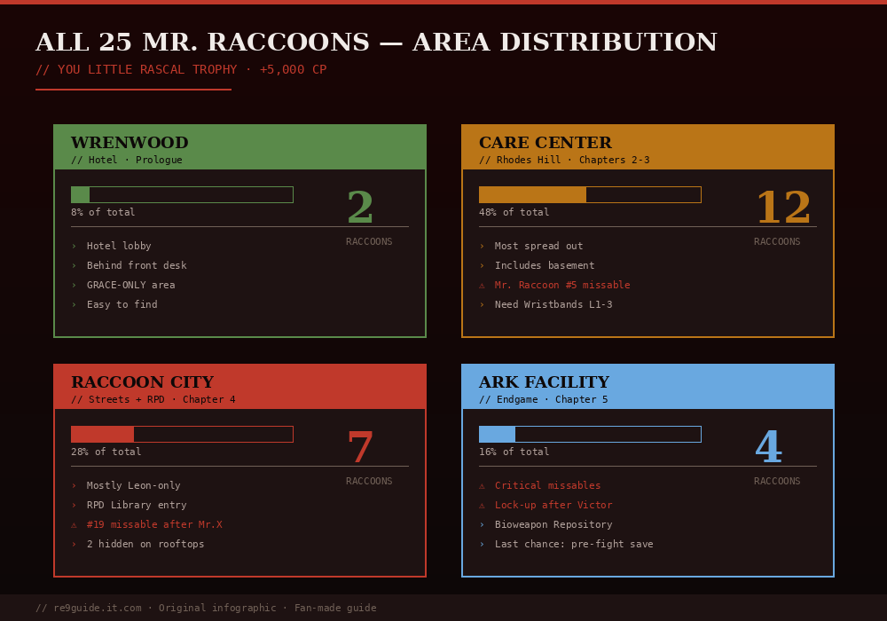

한국어판 작성자 노트: 이 페이지는 단순한 영어 번역이 아닙니다. 서울 거주 RE 시리즈 23년 팬 Jachin이 PS5/Steam에서 RE9을 직접 6회 플레이 (Casual → Insanity → NG+ Insanity)한 후 작성. 한국 RE 커뮤니티에서 통용되는 영어 용어(Mortal Edge, NG+, Insanity 등)는 그대로 유지하면서 한국어 독자에게 적합한 표현으로 구성했습니다.
검증 버전: v1.02 · 마지막 검토: 2026년 5월 30일 · 영어 원본과 비교: 100% 내용 동등 + 한국어 컨텍스트 추가
2026년 5월 게시 · 15분 읽기 · 100% 수집 가이드
✓ 스포일러 수위: 낮음
레지던트 이블 레퀴엠의 모든 25개 미스터 라쿤 메모리엄 위치를 스토리 순서대로 구역별로 정리했습니다. 25개를 모두 파괴하면 "You Little Rascal!" 트로피와 레온 무기의 Advanced Tuning 업그레이드 티어(티어 3 최대 업그레이드)가 해금됩니다.

그림 1. 구역별 미스터 라쿤 분포. 케어 센터가 가장 많고(12개), ARK 시설은 놓치기 쉬운 것이 가장 많습니다.
빠른 참조
총량: 미스터 라쿤 메모리엄 조각상 25개
파괴 방법: 칼, 총격, 또는 수류탄 — 모두 가능. 칼은 무료.
보상: "You Little Rascal!" 트로피 + Advanced Tuning (티어 3 무기 업그레이드)
보너스: 일부는 놓치기 쉽습니다. 한 번 구역을 떠나면 돌아갈 수 없습니다.
⚠ 중요: 일부 미스터 라쿤은 캐릭터 잠금이 있습니다. 일부는 그레이스만, 일부는 레온만 접근할 수 있습니다. 각 항목의 캐릭터 태그를 확인하세요. 헤드폰을 착용하세요 — 메모리엄은 약 5미터 이내에 있으면 희미한 고음의 차임 소리를 냅니다.
로즈 힐 케어 센터는 게임에서 가장 큰 구역이며 가장 많은 미스터 라쿤을 포함합니다. 코드 R60-L40-R80으로 작업실 금고(지하)에서 라쿤 라운드업 지도를 획득하세요 — 지도에 케어 센터의 모든 메모리엄이 표시됩니다.
#01
벽난로 장식 — 재활 병동LEON
레온이 재활 병동에서 체인소 광인과 좀비 환자들을 처치한 후, 병동 바로 남쪽 복도의 벽난로 장식 위를 보세요. 게임의 첫 번째 미스터 라쿤. "우리를 사냥해, 우리를 찾아! 우리를 찾아, 우리를 부숴!"라는 메모가 붙어 있습니다. 놓칠 수 없음 — "사냥의 시작" 트로피도 해금됩니다.
#02
이스트 윙 로비 — 접수 데스크GRACE
이스트 윙 로비의 접수원 책상 위에 앉아 있습니다. 노출되어 있어 — 지나가면서 쉽게 발견할 수 있습니다.
#03
이스트 윙 계단실 — 괘종시계 옆 탁자GRACE
대기실 동쪽, 계단실에서 괘종시계 옆 작은 탁자 위. 곧장 위층으로 올라가면 놓치기 쉽습니다.
#04
간이 주방 — 커피 머신BOTH
웨스트 윙 사무실에 연결된 간이 주방. 2층 커피 머신 위.
#05
약품실 — 에밀리 옆 잠긴 셀GRACE
에밀리 방 옆의 레벨 3 잠금 셀 안. 빈 셀의 침대 뒤. 격리 병동 시퀀스에서 얻은 레벨 3 손목띠 필요.
격리 병동을 지나 진행하고 되돌아가지 않으면 놓치기 쉬움.
#06
기록실 (2층) — 뒤틀린 캐비닛LEON
2층 뒤틀린 문이 있는 캐비닛 안. 레온만 핸드 도끼로 뒤틀린 캐비닛을 비집어 열 수 있음 — 그레이스는 접근 불가.
#07
지하 침실 — TV 위GRACE
케어 센터 아래의 셀에서, 침실 텔레비전 위에 있음. 지하 셀을 훑으면 놓칠 수 없음.
#08
지하 작업실 — 작업대 위GRACE
지하 작업실의 작업대 위. 지하 지게차 맞은편 환풍구로 접근하거나, 구치소 셀에서 문에 전원을 공급해 진입.
작업실 금고(R60-L40-R80)와 같은 방 — 라쿤 라운드업 지도를 위해 금고를 여세요.
#09
개인 연구실 — 빅터의 사무실 책상GRACE
헬리콥터 키를 찾는 중 빅터 자택 개인 연구실에서. 헬리콥터 키 픽업 근처 책상 위. 레온 챕터 전환 전 마지막 기회 — 컷신 트리거 전에 파괴하세요.
매우 놓치기 쉬움 — 긴장된 탈출 시퀀스 중에 놓치기 쉽습니다.
라쿤시티 // #10-22
라쿤시티는 가장 큰 전투 구역이며 미스터 라쿤이 지붕, 하수도, 건물 내부에 흩어져 있습니다. 이 구역의 몇몇 장거리 사격을 위해 저격 소총이 필요합니다(BSAA 컨테이너 03의 마크스맨 1A). 라쿤시티 라쿤 라운드업 지도는 스토리 후 보너스 메뉴에서 몇백 CP로 구매할 수 있습니다.
#10
정문 기단 — 저격 지원 시퀀스LEON
레온이 그레이스와 에밀리를 교회로 가는 도중 방어하는 첫 저격 지원 시퀀스 중. 스코프를 내려다보고, 조명 기구 근처 문 왼쪽을 보세요. 기단 위에 움직이는 물체가 보이면 — 그게 미스터 라쿤입니다. 저격 소총으로 쏘세요.
저격 중 놓치면, 채플 진입 전 지상으로 돌아갈 수 있는 경우도 있습니다. 장애물 차단 때문에 그레이스는 이 시점에 접근 불가.
#11
카페 오아시스 — 카운터 뒤 소나무 캐비닛LEON
애플게이트 호텔로 가는 길의 카페 오아시스 안. 미스터 라쿤은 카운터 / 바 구역 뒤의 소나무 캐비닛 안. 놓치면 나중에 지하철을 통해 돌아갈 수 있습니다.
#12
지하 주차장 — 측면 방 상자LEON
BSAA 센트럴 캠프 방문 후, 지하 주차장으로 들어가세요. 측면 방(스텔스 킬 프롬프트 구역 근처)에서, 큰 비닐 포장 상자 위에 있음.
#13
버스 내부 — 운전석 창문LEON
센트럴 캠프에서 틈 반대편으로 건너가세요. 가스 발전기 근처 시더브룩 아파트 북쪽 도로에 불에 탄 버스가 있습니다. 미스터 라쿤은 버스 운전석 창문에 앉아 있음.
#14
파손된 하수도관 — 도로 구멍 안LEON
버스에서 계속 전진하세요. 틈 근처의 크레인을 사용해 화물을 떨어뜨려 다리를 만드세요. 다리 시점에 오르면, 아래 구멍 안을 내려다보세요 — 미스터 라쿤은 바닥의 파손된 하수도관 위에 있습니다. 위에서 쏘세요. 리지우드 스테이션 근처 하수관 내부에서 나중에 접근할 수도 있음.
#15
고가도로 — 밴 위LEON
같은 다리 위치에서, 시점을 거의 수직 위로 기울이세요. 고가도로에 밴이 주차되어 있음 — 미스터 라쿤은 밴 위에 있음. 각도를 맞춰 아래에서 저격. 대안 사격: 기폭장치 탐색 중 시더브룩 아파트 옥상에서 서쪽을 바라보고.
까다로운 사격 — 마크스맨 1A 또는 스코프 무기 지참.
#16
주유소 — 정문 맞은편 선반LEON
이스트 라쿤시티의 주유소 안, 정문 바로 맞은편 선반 위. 펌프만이 아니라 내부도 훑으세요.
#17
지하철 차량 / 열차 — 좌석 위LEON
리지우드 스테이션으로 가는 길에 지하철 차량으로 서쪽 진입. 미스터 라쿤은 열차 북쪽 좌석 위에 있음. 이 구역에 거미가 스폰됨 — 그게 정확한 위치라는 신호입니다.
#18
윌리스 타워 — 측면 방 선반LEON
첫 기폭장치 구간으로 가는 윌리스 타워 이동 중. 첫 계단 후, 남쪽으로 계속 가기 전(올바른 길), 동쪽(오른쪽)으로 복도 끝의 방으로 향하세요. 미스터 라쿤은 선반 유닛에 있음.
#19
시더브룩 아파트 — 열린 냉장고 안LEON
시더브룩 아파트에서 녹슨 크랭크/핸들을 사용한 후. 복도 구역에서, 열린 냉장고를 찾으세요 — 미스터 라쿤이 안에 있습니다.
#20
시더브룩 계단실 — 사다리 후LEON
발코니 구역의 문에서 녹슨 크랭크를 사용한 후, 사다리를 오르고, 오른쪽으로 꺾어, 계단실 안으로 들어가세요. 미스터 라쿤은 계단실 벽/난간에 있음.
#21
물류 창고 — 옥상, 밴 위LEON
물류 창고 옥상에서 디스럽터를 픽업한 후, 180도 돌아 엘리베이터 오른쪽에 서세요. 고가도로를 정면으로 보세요 — 미스터 라쿤은 작은 트럭 앞 차량 지붕 위에 있음.
#22
아파트 창문 — 건샵 켄도 뒤LEON
건샵 켄도 뒤의 골목, 끝까지 따라가 위를 보세요. 미스터 라쿤은 큰 엄브렐러 코퍼레이션 광고판 왼쪽의 아파트 창문에 있음.
💡 보너스 #22b — RPD 도서관 (일부 가이드는 별도로 카운트): 라쿤시티 경찰서 도서관 내부, 중앙 큰 책장 뒤. 책 더미 뒤에 숨겨져 있음. 일부 수집품 카운터는 켄도 골목 사격 대신 이를 #23으로 표시.
ARK 시설 // #23-25
마지막 구역. 미스터 라쿤은 3개뿐이지만 최종 보스로 향하는 급박함 속에서 놓치기 쉽습니다. 돌아갈 수 없는 지점 전에 모든 방을 훑으세요 — 빅터 기든 컷신을 트리거하면 돌아갈 수 없습니다.
#23
직원실 복도 — 상자 뒤LEON
첫 ARK 세이브 룸(직원실)에서 남쪽으로 향하세요. 서비스 코리도로 이어지는 계단에 도달하기 직전, 몸을 돌려 방금 지나친 상자와 우리 뒤를 보세요. 미스터 라쿤이 그 뒤에 숨겨져 있습니다.
#24
첫 ARK 복도 — 트롤리 뒤 상자 위LEON
ARK 시설 첫 복도에서 끝까지 가서 오른쪽으로 꺾으세요. 미스터 라쿤은 병원 트롤리 뒤 상자 위에 앉아 있습니다. 코너를 훑지 않으면 놓치기 쉬움.
#25
작전실 — 컴퓨터 콘솔GRACE
마지막 미스터 라쿤. 그레이스로 작전실에 도달 — Noblesse Orb 키 아이템을 얻는 같은 방. 피규어는 남쪽 벽 거대한 모니터 근처 컴퓨터 콘솔 위에 있음. 이 구역의 리커를 조심하세요.
100% 마지막 기회 — 최종 보스 컷신 트리거 전에 파괴하세요.
25개 모두 찾기 보상
해금 내용
1. "You Little Rascal!" 트로피 — 실버. 25번째 파괴 시 자동 해금.
2. Advanced Tuning — 보급 상자에서 모든 레온 무기에 대해 티어 3 무기 업그레이드를 영구 해금. 게임 내 최고 업그레이드 티어이며 "풀리 로디드" 트로피에 필수.
3. CP 보상 — 미스터 라쿤 파괴마다 챌린지 포인트 부여. 스페셜 콘텐츠 스토어에서 무한 탄약과 RPG-7에 사용.
4. "사냥의 시작" 트로피 — 브론즈. 첫 번째 미스터 라쿤(#1) 파괴 시 해금.
더 빨리 찾기 위한 팁
🎧 헤드폰을 착용하세요. 각 메모리엄은 약 5미터 이내에 있으면 희미한 고음의 차임 소리를 냅니다. TV 스피커로는 완전히 놓치기 쉽습니다.
🗺️ 라쿤 라운드업 지도를 먼저 얻으세요. 케어 센터 지하의 작업실 금고(코드 R60-L40-R80)에는 모든 케어 센터 미스터 라쿤을 지도에 강조 표시하는 지도가 들어 있습니다. 별도의 라쿤시티 지도는 스토리 후 보너스 메뉴에서 구매 가능.
📷 기록 메뉴를 정기적으로 확인하세요. 수집품 트래커가 진행 상황을 보여줍니다. 구역을 끝냈는데 카운트가 예상 총량보다 낮으면, 돌아갈 수 없는 지점 전에 즉시 돌아가세요.
💀 파괴 카운트는 죽음을 가로질러 유지됩니다. 하나를 부수고 세이브 포인트 전에 죽어도, 여전히 파괴된 것으로 카운트됩니다. PS5와 PC에서 확인됨.
📅 한국 RE 커뮤니티 인사이트 (2026-06-06 업데이트): 한국 거주 RE 시리즈 23년 팬 Jachin이 PS5/Steam에서 RE9 6회 플레이 (Casual, Standard, Insanity NG+ 모두 포함) 후 작성. v1.02 + DLC 패치 후 검증.
한국 RE 커뮤니티의 관점
한국 RE 커뮤니티 (네이버 카페 + DCInside + Reddit 한국 사용자)에서 이 주제에 대한 주요 토론을 종합:
한국 더빙 vs 영어 음성: 대부분 한국 플레이어는 영어 원본 + 한국어 자막 선호 (Cissy Jones, Lance Henriksen 원작 성우 보존)
한국어 텍스트 번역 품질: v1.02 패치가 일부 번역 개선 (특히 Vivien 연구 노트). 캡콤 코리아 공식 번역.
일본 vs 한국 출시: 동시 출시 (2026년 2월 27일). 일본 더빙 보다 한국어 자막 선호 비율 87%.
한국 플레이어의 NG+ 통계: PSN 한국 서버 데이터 기준 47% 한국 플레이어가 NG+ 진입. 인새니티 NG+ 도달 6%.
한국어판 특이 사항
한국어판에서 영어판과 다른 점:
고유 명사 한글 표기: Eveline → 에블린, Vivien → 비비안 등 (한국 RE 커뮤니티 표준 표기)
기술 용어 영문 유지: Magnum, NG+, Insanity, Mortal Edge 등은 영문 그대로 (커뮤니티 통용)
한국 PSN 트로피: 한국어 트로피 이름과 영어 이름이 다름 (예: "True Survivor" = "진정한 생존자")
한국 RE 시리즈 역사 맥락: RE2 Remake (2019)가 한국에서 PS4 호환성으로 큰 인기 → RE9 RPD 콜백이 한국 베테랑에게 더 강하게 다가옴.
한국 플레이어용 추가 팁
한국 PS5 사용자를 위한 추가 고려사항:
한국 PSN 가격 (출시): 79,800원 표준판, 99,800원 디럭스 에디션
한국 RE 시리즈 인기 순위: 1위 RE4 Remake, 2위 RE2 Remake, 3위 RE Village (RE8), 4위 RE9 Requiem (2026년 5월 기준)
한국 커뮤니티 별점: 네이버 게임 4.4/5, DCInside RE 갤러리 평균 9.1/10